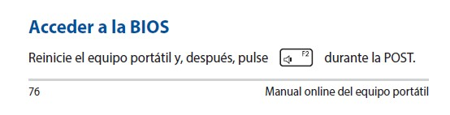

Si, parece raro, pero funciona100%realNoFake, ¡¡¡claves originales a € Sra!!! ¿la trampa? la factura se emite desde paises raros, no preguntes mucho... Pero que existan si es legal y cosa de Microsoft, lo unico un poco raro es el precio y la factura... Pero no te rayes, si quieres un dia lo comentamos un poco más
Para preparar una unidad USB como instalador de Windows 11, sigue estos pasos:
Descarga la herramienta de creación de medios de Windows 11 desde el sitio oficial de Microsoft.
Conecta una unidad USB a tu computadora (asegúrate de que tenga al menos 8 GB de espacio).
Ejecuta la herramienta de creación de medios y selecciona "Crear medio de instalación (unidad flash USB, DVD o archivo ISO)".
Selecciona el idioma, la edición y la arquitectura (32 bits o 64 bits) que deseas para Windows 11.
Selecciona "Unidad flash USB" como medio a utilizar.
Elige la unidad USB que deseas usar y sigue las instrucciones para crear el medio de instalación.
Instalación de Windows 11
Para instalar Windows 11, sigue estos pasos:
Conecta la unidad USB que preparaste anteriormente a tu computadora.
Reinicia tu computadora y accede al menú de arranque (F2).  F2">
Es posible que al no tener Sistema Operativo, vaya directamente al menú de arranque
Selecciona la unidad USB como dispositivo de arranque/boot => Si hay una lista, mover a primer lugar (los controles suelen aparecer en pantalla, ¡aunque el tuyo igual tiene raton en esta pantalla!, pero no es lo normal)
Guardar y salir => Se reiniciará y ahora cargara el USB de instalación
Sigue las instrucciones en pantalla para instalar Windows 11 (nombre, correo,...)
Cuando llegues a la pantalla de WIFI o de instalar Drivers, tienes que darle datos con el movil mediante un cable (que tú pc todavia no sabe que tiene wifi/bluethoot, pa eso son los drivers, para que sepa que tiene y como se usa)
Por aqui te dejo un video de YT que he encontrado, es prácticamente tú PC o uno muy parecido. Pero como este tipo de menus/pantallas es aglo común del fabricante, tienes que tener la misma o casi casi.
Recuerda: YT tiene traducción de subtitulos. Pero tampoco tienes que oirle mucho. Marca las mismas opciones y punkto.
El primero de todos, el de red => Networking: controlador de LAN inalámbrica de Realtek Sobretodo para poder desconectar el acceso a datos del movil
Tras ese y con paciencia. Conectate ya al wifi, y todos los que salen en esa página.
Estos son faciles y tipo Windows (descargar, doble click, siguiente, siguiente,...) a ver, ves más o menos leyendo lo que salga, pero en los drivers no deberias tener mucho para elegir. En caso duda pregunta.